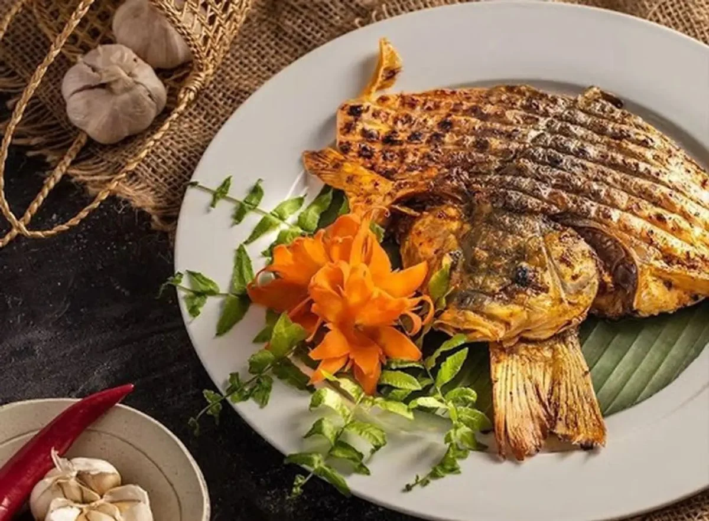

GIỚI THIỆU ẨM THỰC TÂY BẮC
Tây Bắc là vùng đất nổi tiếng với những dãy núi hùng vĩ, thiên nhiên hoang sơ và nền văn hóa đặc sắc của nhiều dân tộc như Thái, Mông, Dao, Tày. Không chỉ nổi bật bởi cảnh đẹp, nơi đây còn có nền ẩm thực phong phú mang đậm hương vị núi rừng. Các món ăn thường sử dụng nguyên liệu tự nhiên như thịt trâu, cá suối, gạo nếp và các loại gia vị đặc trưng như mắc khén, hạt dổi.
Đặc điểm của ẩm thực Tây Bắc
Ẩm thực Tây Bắc mang nhiều nét đặc trưng riêng. Nguyên liệu thường được lấy trực tiếp từ thiên nhiên như rau rừng, cá suối hay thịt gia súc được nuôi thả tự nhiên. Nhiều món ăn được chế biến bằng cách nướng trên than củi hoặc hun khói trên bếp, tạo nên hương vị rất riêng của vùng núi.
Ý nghĩa văn hóa của ẩm thực
Đối với người dân Tây Bắc, ẩm thực không chỉ là nhu cầu ăn uống mà còn gắn liền với đời sống văn hóa và các lễ hội truyền thống. Những món ăn đặc sản thường được chuẩn bị trong các dịp lễ hội hay khi tiếp đón khách để thể hiện sự hiếu khách của người dân nơi đây.
Mục đích xây dựng website
Website "Ẩm thực Tây Bắc" được xây dựng nhằm giới thiệu và quảng bá những nét đặc sắc của ẩm thực vùng Tây Bắc đến với mọi người, giúp người xem hiểu thêm về văn hóa và các món ăn đặc trưng của vùng đất này.
CÁC MÓN ĂN ĐẶC SẢN

Thịt Trâu Gác Bếp

Cơm Lam Nướng

Pa Pỉnh Tộp

Thắng Cố

Khâu Nhục
THÀNH VIÊN THỰC HIỆN
| Vi Thị Quỳnh Như Trưởng Nhóm - Phân Công Nhiệm Vụ Và Nội Dung Món Ăn "Thịt Trâu Gác Bếp" |
Nguyễn Mạnh Duy Giới Thiệu Trang Website |
| Nguyễn Thành Tân Đặt Món Ăn |
Lý Quốc Cường Liên Hệ Và Phản Hồi Của Khách Hàng |
| Sầm Thị Trà My Nội Dung Món Ăn "Cơm Lam Nướng" |
Trần Anh Tú Nội Dung Món Ăn "Pa Pỉnh Tộp" |
| Nguyễn Thị Quỳnh Nội Dung Món Ăn "Thắng Cố" |
Nguyễn Thị Hoa Nội Dung Món Ăn "Khâu Nhục" |